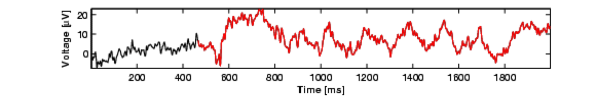

Research
A large amount is known about brain activity phenomena that are associated with memory tasks. More recently, the field of cognitive neuroscience of memory has been evolving from a descriptive approach (e.g., "neural correlates of...") to research that builds directly upon the rich knowledge we have accumulated over decades of behavioural memory research.
We specifically focus on brain-activity research that is intimately connected to behavioural experimental research and computational or mathematical cognitive models, with the goal of increasing what we can learn from memory-related brain-activity measures. At the same time, brain activity can provide complementary lines of evidence that we can use to inform and constrain our understanding of the cognitive processes that support memory, and even constrain our formal models. Ultimately, we want to be able to construct models of how brains remember that are true to both behaviour and neurophysiology
By asking new kinds of questions about the brain-behaviour relationship, and by developing novel ways to analyse our data, we are already beginning to learn new things about memory behaviour, memory-related brain activity and even the relationship between the two.